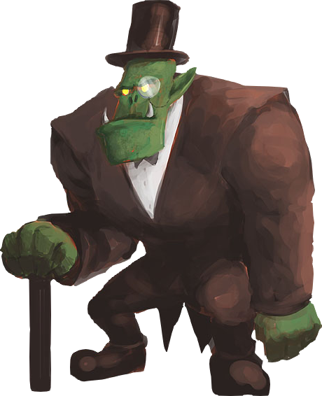

Орки
Орки — зеленокожие громилы, которые настолько сильны и выносливы, что смогли без сторонней помощи пережить апокалипсис. Орки являются формой того же вида, что и гоблины.
Особенности орков
Срок жизни. Орки живут вплоть до 200 лет.
Кожа. От бледно-бирюзовой, до ярко-зелёной или желтовато-зелёной.
Глаза. Любой цвет, чёрные зрачки.
Волосы. Встречаются редко, но могут быть почти любые.
Вес. От 90 до 185 кг.
Рост. От 165 до 210 см.
Умения орков
Увеличение характеристик. Либо значение одной характеристики на выбор увеличивается на 2, а другой на 1, либо значение трёх различных характеристик на выбор увеличивается на 1.
Скорость. Ваша базовая скорость ходьбы составляет 30 футов.
Силач. Вы можете изменить исход любого спасброска, применив свою силу. Когда вы совершаете любой спасбросок, вы можете совершить спасбросок Силы, и добавить выпавшее значение. Вы можете решить, применять ли это умение, после того как увидите результат броска, но до того как Мастер скажет, прошли вы проверку или нет. Вы можете использовать это умение 2 раза. Вы восстанавливаете все потраченные использования, когда завершаете короткий отдых.
Здоровый образ жизни. Вы владеете спасбросками Силы. Если вас уже есть владение ими, вы получаете владение одним спасброском на выбор.
Орочья прочность. Максимальное значение ваших хитов увеличивается на 3, и вы получаете 1 дополнительный хит с каждым новым уровнем.
Размер. Ваш размер — Средний.